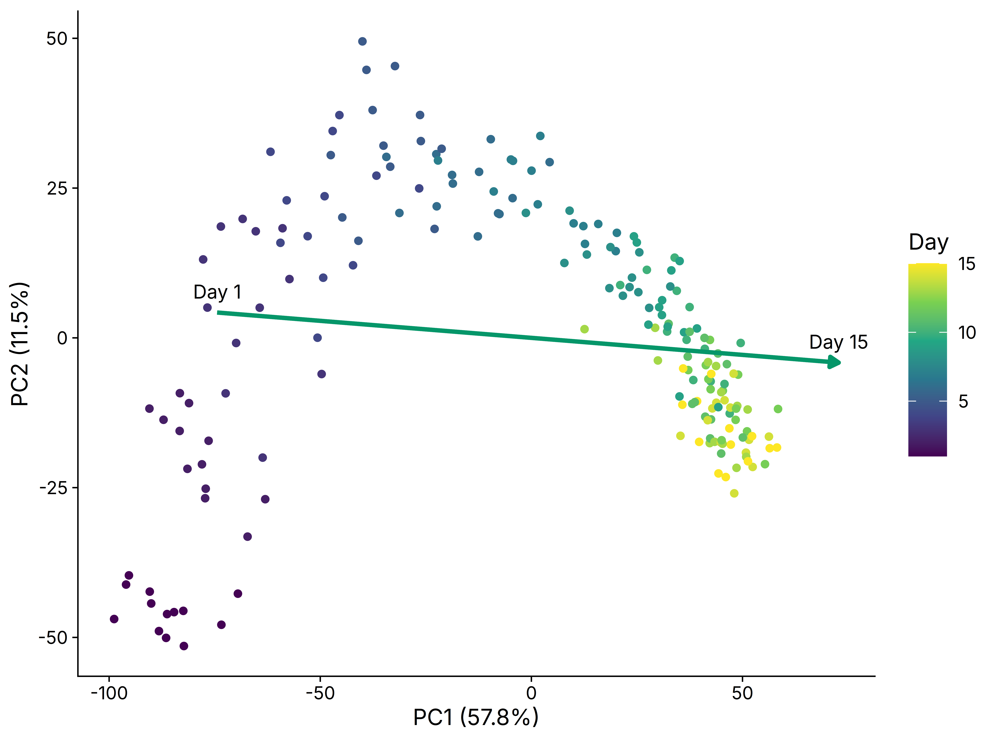
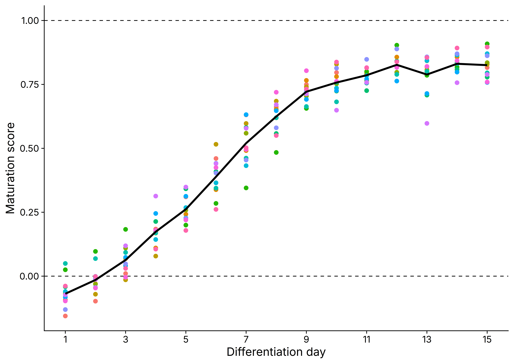
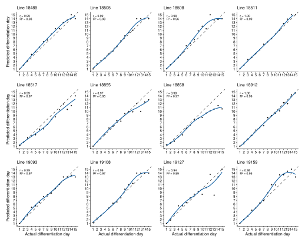
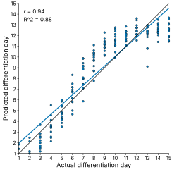
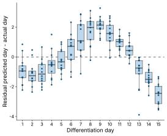

Maturation Scoring Tutorial
1 Overview of maturation scoring method
This tutorial demonstrates a PCA-based maturation scoring workflow for time-series bulk RNA-seq data. The example dataset is QC-processed GSE122380 iPSC-to-cardiomyocyte differentiation data. The active example contains 192 samples collected across 15 daily timepoints from day 1 through day 15. The dataset includes 13 independent cell lines, with one sample per available cell line at each timepoint. Most timepoints contain 13 samples; days 2, 3, and 4 contain 12 samples because one cell-line sample is missing at each of those days.
There are no perturbation samples and no trisomy 21 samples in this dataset. The samples represent different cell lines sampled along the same differentiation time course. That structure makes the dataset useful for benchmarking and validating a maturation scoring method: the time resolution is high, the trajectory spans many ordered stages, and the cell-line replication lets us test whether the score tracks day while remaining stable across genetic backgrounds.
All retained samples are treated as one reference trajectory. The analysis has five conceptual parts. First, identify genes that vary across the reference time-course. Second, use those time-variant genes to train a PCA space using only reference samples. Third, fit a maturation axis through the reference trajectory using the intermediate timepoints as well as the start and end of the series. Fourth, project samples into the reference-trained PCA space. Fifth, normalize the vector so that the starting timepoint has a maturation score of 0 and the final timepoint has a maturation score of 1.
The complete runnable analysis code is stored separately in
scripts/cardiomyocyte_maturation_score_analysis.R.
1.1 Core principle of maturation scoring
The core principle is simple. After defining a reference differentiation trajectory, each sample receives a score based on where it falls along that trajectory. Instead of scoring one marker gene at a time, the workflow reduces a time-variant gene signature into a small number of principal components. A line of best fit through the reference samples then becomes the maturation axis.
The PCA space should be trained only on reference samples. Non-reference samples are then projected into that fixed space and compared against the reference maturation axis. This prevents treatment, genotype, or batch-specific variation from defining the differentiation trajectory itself.

Figure 1.1: Best-fit maturation vector in reference PCA space.
2 Background
Time-course differentiation experiments often contain samples spread across days, donors, and batches. A direct day-by-day comparison is useful, but it does not give a single continuous coordinate for progression along the reference trajectory.
This workflow turns the time course into that coordinate. Samples near the first reference timepoint score near 0. Samples near the final reference timepoint score near 1. Values outside that range are allowed; they indicate that a sample projects earlier or later than the fitted reference interval along the same axis.
In this cardiomyocyte example, all retained samples are treated as the reference trajectory. In experiments with additional conditions, those non-reference samples would be projected into the fixed reference space after the PCA model and best-fit line are learned.
In practical terms, the score asks: where does this sample fall along the reference differentiation trajectory, after reducing the selected temporal genes to the leading PCs?
2.1 Mathematical principles
The maturation score reduces a multi-gene expression trajectory to a one-dimensional coordinate. First, temporal genes are selected, typically using a likelihood ratio test for a day effect. VST expression values for those genes are then used to train PCA on the reference samples only. Other samples are not used to learn the PCA space; they are projected into the reference-defined space afterward.
Let \(X \in \mathbb{R}^{n \times p}\) be the expression matrix for
\(n\) samples and \(p\) selected temporal genes, and let
\(\mathbf{x}_i\) denote the expression vector for sample \(i\). PCA is
trained on the reference samples after centering each gene by its
reference-sample mean. If scoring_pca_scale = TRUE, genes are also
divided by their reference-sample standard deviation before PCA.
For the unscaled case, the PCA coordinates for sample \(i\) are
\[ \mathbf{z}_i = (\mathbf{x}_i - \boldsymbol{\mu}) W_k. \]
Here, \(\boldsymbol{\mu}\) is the vector of reference-sample gene means and \(W_k\) contains the first \(k\) PCA loading vectors. With PCA scaling enabled, the same equation is applied after dividing each centered gene by its reference-sample standard deviation.
The best-fit maturation axis is fit by regressing each retained PCA coordinate on differentiation day. This means the line is not drawn only between the observed first and final timepoint centroids. Instead, the intermediate timepoints contribute to the fitted trajectory, so the resulting axis represents the dominant temporal direction across the full reference series. The fitted line is then evaluated at the first and final reference days:
\[ \mathbf{v} = \widehat{\mathbf{z}}_{t_{\mathrm{end}}} - \widehat{\mathbf{z}}_{t_{\mathrm{start}}}. \]
Each sample is scored by projecting its PCA coordinate onto this axis and normalizing by the squared length of the axis:
\[ s_i = \frac{ (\mathbf{z}_i - \widehat{\mathbf{z}}_{t_{\mathrm{start}}})^\top \mathbf{v} }{ \mathbf{v}^\top \mathbf{v} }. \]
This normalization anchors the fitted reference trajectory so that
\[ s(\widehat{\mathbf{z}}_{t_{\mathrm{start}}}) = 0, \qquad s(\widehat{\mathbf{z}}_{t_{\mathrm{end}}}) = 1. \]
The projected point on the fitted maturation axis is
\[ \widehat{\mathbf{z}}_i = \widehat{\mathbf{z}}_{t_{\mathrm{start}}} + s_i \mathbf{v}. \]
The zero point is therefore the fitted day 1 endpoint in the learned PCA space. A score of 1 is the fitted day 15 endpoint. Scores below 0 or above 1 are valid; they mean a sample projects earlier or later than the fitted reference interval along the same axis.
3 Required input data
This workflow assumes that you already have variance-stabilized transformed counts from DESeq2 and that any necessary QC and batch-effect correction has already been performed. You also need sample metadata and raw counts, because the LRT is run from the count matrix.
The active tutorial contains 15 differentiation timepoints and 192 total samples. Most timepoints have 13 replicate cell lines; days 2, 3, and 4 have 12 samples each. Across the full dataset, there are 13 distinct cell lines.
| Timepoints | Samples per timepoint | Total samples | Cell lines |
|---|---|---|---|
| 15 | 12-13 | 192 | 13 |
| Object | Class | Meaning |
|---|---|---|
GSE122380_metadata.rds |
data.frame |
sample metadata with sample_id, day_numeric, day_factor, and cell_line |
GSE122380_counts.rds |
integer matrix | filtered raw counts; genes are rows and samples are columns |
GSE122380_vst.rds |
numeric matrix | VST expression matrix; genes are rows and samples are columns |
The sample order is aligned across metadata, counts, and VST objects.
4 Computing maturation score
The workflow is organized into four practical analysis steps: identify time-variant genes, train the reference PCA space, fit the reference maturation line, and score samples relative to that fitted line.
4.1 Step 1. Identify time-variant genes in reference time-series differentiation
The first step is to identify time-dependent genes in the reference differentiation. In other words, we define a set of genes whose expression changes significantly across timepoints. Because the goal is to score maturation or progression along a differentiation axis, genes whose expression is constant across differentiation are not useful. They do not tell us whether a sample is more or less mature.
To compute this time-variant gene signature, we use DESeq2’s likelihood ratio test. A pairwise approach is possible: for example, with five timepoints, one could test D2 versus D1, D3 versus D2, D4 versus D3, and D5 versus D4, then take the union of significant genes. That approach is less clean because it requires many pairwise contrasts and makes the gene set depend on an arbitrary collection of adjacent comparisons.
The LRT is a simpler way to ask whether a gene changes across more than two levels. Here, the full model includes cell line and day, while the reduced model includes cell line only. The null hypothesis is that the full model does not fit meaningfully better than the reduced model. If that null is rejected, the day term is capturing significant expression variation, and the gene is treated as time-variant.
A stage-aware expression filter can be useful in other datasets, especially if the LRT returns a very large number of low-abundance genes. For example, one can require each gene to pass a minimum expression threshold at one or more timepoints to focus on a cleaner time-dependent gene list. That filter is optional and is not applied in the analysis shown here.
The LRT compares a full model with cell line and day against a reduced model with cell line only. The selected temporal gene set is then used for PCA fitting, heatmap clustering, and cluster-level trajectory plots.
| Total number of genes | Genes passing LRT filter of padj < 0.05 |
|---|---|
| 13,615 | 13,549 |
The annotation bar below clusters samples by Pearson correlation across the filtered temporal genes. The day annotation shows whether the sample ordering tracks the differentiation trajectory after temporal genes have been defined.

Figure 4.1: Sample clustering from Pearson correlations across LRT-significant temporal genes, annotated by differentiation day.
This is a useful sanity check. If the time-variant genes are capturing the reference differentiation program, then clustering samples with those genes should recover a clear timepoint structure.

Figure 4.2: Z-scored VST expression for the top 1,500 LRT-significant temporal genes. Row clusters are color coded. Columns are ordered by day without visible gaps between day blocks; within each day, samples are clustered to determine order, but the clustering tree is hidden.
Similarly, plotting the top 1,500 LRT-significant temporal genes in a heatmap shows that several broad categories of time-dependent behavior emerge. The top genes are used here only to keep the visualization readable. The full LRT gene set is still used for the main PCA-based score. The choice of four heatmap clusters is mainly for demonstration: the point is not that there are exactly four biological modules, but that the LRT captures genes that decrease, genes that increase, genes that rise and plateau, and other non-monotonic patterns.
The key takeaway is that this maturation score is not built only from genes that increase during differentiation. It also includes genes that decrease, genes with transient behavior, and other classes of time-variant expression.

Figure 4.3: Mean VST z-score trajectories for the top 1,500 LRT-significant temporal genes grouped into four heatmap clusters.
4.2 Step 2. Train PC space on reference differentiation samples using time-variant genes
Having defined and validated the time-dependent gene list, we now use those genes as the input for PCA. Because this is a reference differentiation trajectory, the PCA space should be learned only from the reference samples. If non-reference samples are allowed to define the PCA space, then treatment-specific or genotype-specific variation can contaminate the PCs, making it harder to interpret the axis as differentiation.

Figure 4.4: Reference PCA using all LRT-significant temporal genes, paired with the PC1-time relationship.
The panel grid below compares the early and late heatmap-cluster gene subsets. Each PCA panel is paired with the corresponding PC1-time relationship beneath it.

Figure 4.5: PCA views and PC1-day relationships for early temporal clusters and late temporal clusters.
4.2.1 PC1 validation
The PC1 validation figure combines loading weights and trajectories for the strongest positive and negative PC1 genes. Gene labels use symbols when local annotation packages can resolve the Ensembl IDs; otherwise the original Ensembl IDs are shown.

Figure 4.6: PC1 validation. Panel a shows the top positive and negative PC1 loading genes. Panel b shows mean z-scored VST trajectories for those genes.
4.3 Step 3. Compute line of best fit starting at first timepoint and ending at last timepoint
After the PCA space is defined, we fit a line through the reference trajectory in PC space. The fitted line is evaluated at the first and last timepoints, and those endpoints define the reference maturation vector.

Figure 4.7: Best-fit maturation vector in reference PCA space.
4.4 Step 4. Project non-reference samples and score relative to line of best fit
After the reference PCA model and best-fit line are fixed, samples are projected into the reference PCA space and scored by their position along the fitted line. This tutorial projects the retained reference samples back into that space to show the scoring behavior.
The score is normalized so that the fitted first timepoint maps to 0 and the fitted final timepoint maps to 1. In a real comparison, non-reference samples would be projected into this already-trained space and scored relative to the same vector.

Figure 4.8: Best-fit maturation scores across differentiation day. Dashed lines mark the fitted day 1 and day 15 endpoints.
4.5 Leave-one-out validation of maturation score
The validation repeats the workflow while holding out one cell line at a
time. For each held-out line, temporal genes are reidentified from the
remaining reference lines, the PCA space and best-fit line are trained on
those remaining samples, and the held-out samples are projected into that
trained space. The plots below summarize the Best fit predictions using
the All temporal gene set.

Figure 4.9: Leave-one-line-out predicted differentiation-day trajectories. Each panel is one held-out cell line.

Figure 4.10: Leave-one-line-out predicted versus actual differentiation day for held-out samples.

Figure 4.11: Leave-one-line-out residuals, calculated as predicted day minus actual day.
5 References
- Love MI, Huber W, Anders S. Moderated estimation of fold change and dispersion for RNA-seq data with DESeq2. Genome Biology. 2014.
- Strober BJ et al. Dynamic genetic regulation of gene expression during cellular differentiation. Science. 2019.
- Xie Y. bookdown: Authoring Books and Technical Documents with R Markdown. 2016.